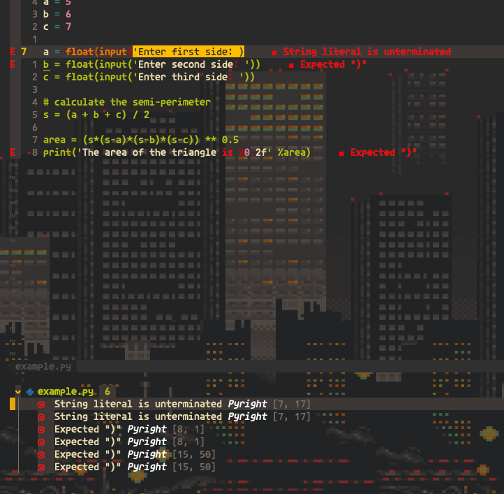

I use nvim-compe for a nice completition menu.

I get completition options from the buffer, vim-jedi, vsnip, ultinips, the nvim lsp, snippets_nvim and treesitter
I use the trouble.nvim plugin (Github Repo)to visually show the syntax errors of the nvim-lsp in the file and in a list at the bottom.
